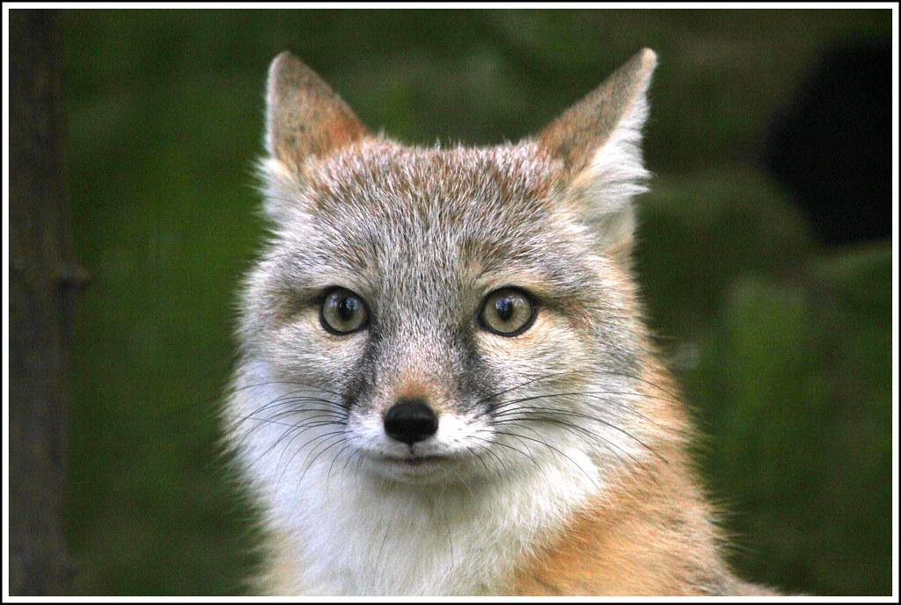

Provided fox test image

Custom image from Expedition 33
I calibrated my camera using ArUco markers from 44 calibration images. Then I captured 40 images of an apple with a single ArUco tag and used cv2.solvePnP() to estimate camera poses with 100% success rate. Finally, I undistorted all images and created a dataset in .npz format for NeRF training.
I implemented a multilayer perceptron with sinusoidal positional encoding to map 2D coordinates to RGB colors. The network was trained using random pixel sampling with MSE loss and Adam optimizer.
I implemented a full 3D NeRF to reconstruct the lego bulldozer from the original NeRF paper dataset. Using 100 training images, 10 validation images, and 60 test camera poses (all at 200×200 resolution), the NeRF learns to synthesize novel viewpoints through volumetric ray marching and neural density/color prediction.
Ray Generation: I implemented the camera-to-world coordinate transformations and pixel-to-ray conversion using camera intrinsics. Each pixel generates a ray with origin at the camera center and direction computed by transforming the pixel through camera coordinates to world space. The ray directions are normalized and account for the 0.5 pixel center offset.
Sampling Strategy: Rather than sampling rays from individual images, I use global random sampling across all training images to get 2048 rays per batch. Along each ray, I sample 48 points between near=2.0 and far=6.0 bounds with random perturbation during training to avoid overfitting to fixed sample locations.
NeRF Architecture: The network is an 8-layer MLP that takes 3D positions (encoded with L=10 frequencies) and viewing directions (encoded with L=4 frequencies) as input. It outputs RGB color and volume density. Key architectural features include a skip connection at layer 5 that re-injects the positional encoding, and separate heads for density (ReLU activated) and color (Sigmoid activated) prediction.
Volume Rendering: I implemented the discrete volume rendering equation from the spec. For each ray, the final pixel color is computed as a weighted sum of colors along the ray, where the weights are calculated from the predicted densities at each sample point following the provided equations.
I attempted to train a NeRF on my own captured apple dataset from Part 0 but couldn't get it to work successfully and it looks too blurry. Also the apple is blue from a RGB/BGR conversion error. Here are my results anyway: